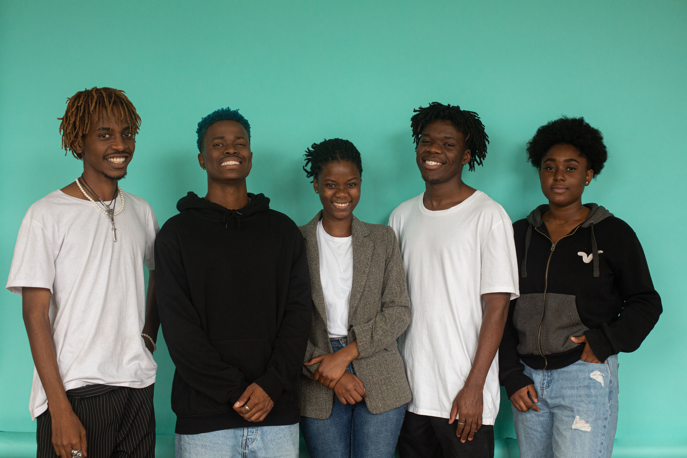

Our MIssion
To establish a centralized digital and physical presence that delivers intergrate skills training, oyuth development, and feeding schemes, while attracting strategic partners to sustain community operations.

Building a self-sustaining digital and physical hub to empower local youth, support families, and connect with corporate CSI partners.

The Gugulethu Communtiy Development Centre (GCDC) was established to close the gap between the local grass-roots initiatives and startegic supporters. In the vibrant township of Gugulethu, the lack of central online visibility histrically limited our ability to showcase ongoing development, share community milestones, and secure sustainable backing.
By creating a centralized digital platform, GCDCC bridges this divide-providing local youth with mobile access to essential programs while giving corporate CSI funders transparent, trackable insight into social impact.
To establish a centralized digital and physical presence that delivers intergrate skills training, oyuth development, and feeding schemes, while attracting strategic partners to sustain community operations.
A connected, self-reliant Gugulethu where youth have direct access to opportunities, and community growth is supported by transparent, long-term funding partnership.
For Funders & Partners: We connect corporate CSI funders with trackable, credible social impact and clear governance metrics.
For Youth & Community: We provide direct mobile access to skills development workshops, healthcare resources, and social support schemes.
Our dedicated team of board members, staff, and volunteers ensure operational efficiencey, financial transparency, and maximum community impact.
